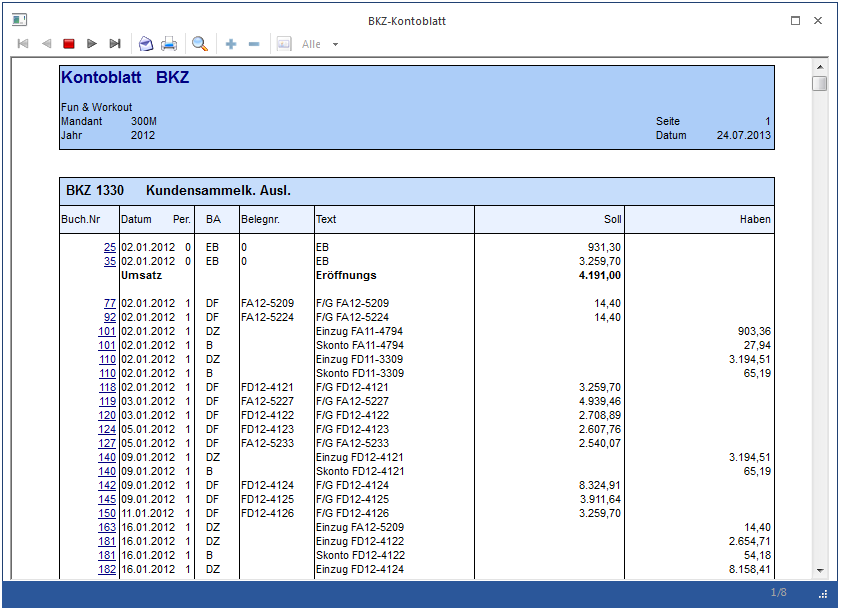
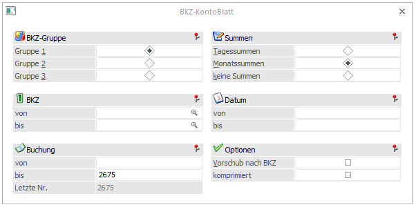
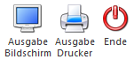

Im BKZ-Kontoblatt, das im Menüpunkt
1 Auswertungen
1 BKZ-Kontoblatt
aufgerufen wird, werden die Buchungsdetails der in einer BKZ zusammengefassten Konten in Form eines Kontoblattes angezeigt. Damit erhalten Sie die Möglichkeit, jede beliebige Bilanzposition als "Sammelkonto" zu betrachten (klassisches Beispiel: Forderungen / Verbindlichkeiten)

Diese Auswertung kann nach denselben Selektionskriterien wie die Auswertung Kontoblatt abgerufen werden:
ü BKZ-Gruppe
ü mit Tagessummen / Monatssummen / keine Summen
ü von BKZ - bis BKZ
ü von Datum - bis Datum
ü von Prima Nota Nr. - bis Prima Nota Nr. (Buchungsnummer)

Hinweis
Beim BKZ-Kontoblatt werden nur Hauptbuchkonten bzw. Konten. die keinem Hauptbuchkonto zugewiesen sind, berücksichtigt, d.h. Nebenbuchkonten werden nicht ausgewertet. (Die BKZ von einem Hauptbuchkonto und dessen Nebenbuchkonten stimmen stets überein!).
Wenn beim Soll- und Habenkonto dieselbe Hauptbuchkontonummer eingetragen ist, wird die Buchung zweimal angedruckt (1x im Soll, 1x im Haben) und auch in den Summen berücksichtigt. Ob der Brutto- oder der Nettowert der Buchung für die Summierung verwendet werden muss, wird anhand des Steuerkennzeichens des entsprechenden Nebenbuchkontos ermittelt.
Ø Vorschub nach BKZ
Wird die Checkbox aktiviert, erfolgt die Ausgabe in Kontoblattform, d.h. nach jeder BKZ wird ein Seitenvorschub durchgeführt.
Ø Komprimiert
ü Nicht aktiviert: Es werden die Einzelzeilen pro BKZ angezeigt.
ü Aktiviert: Pro BKZ wird nur der Umsatz pro Monat angezeigt.
Buttons

Ø Ausgabe Bildschirm / Drucker
Aus der Auswahllistbox kann gewählt werden, ob die Ausgabe am Bildschirm oder am Drucker durchgeführt werden soll. Standardmäßig wird die Ausgabe auf Bildschirm vorgeschlagen, die auch durch Drücken der F5-Taste gestartet werden kann.
Ø Ende
Durch Drücken der ESC-Taste wird das Fenster geschlossen.